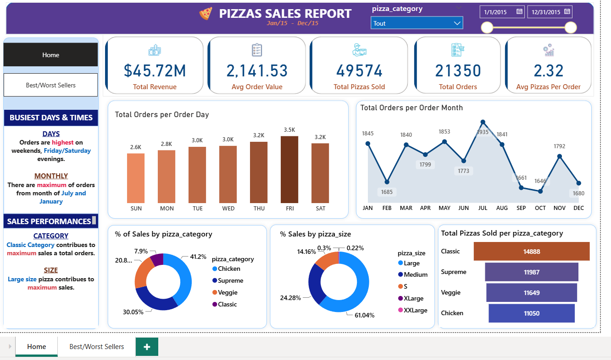
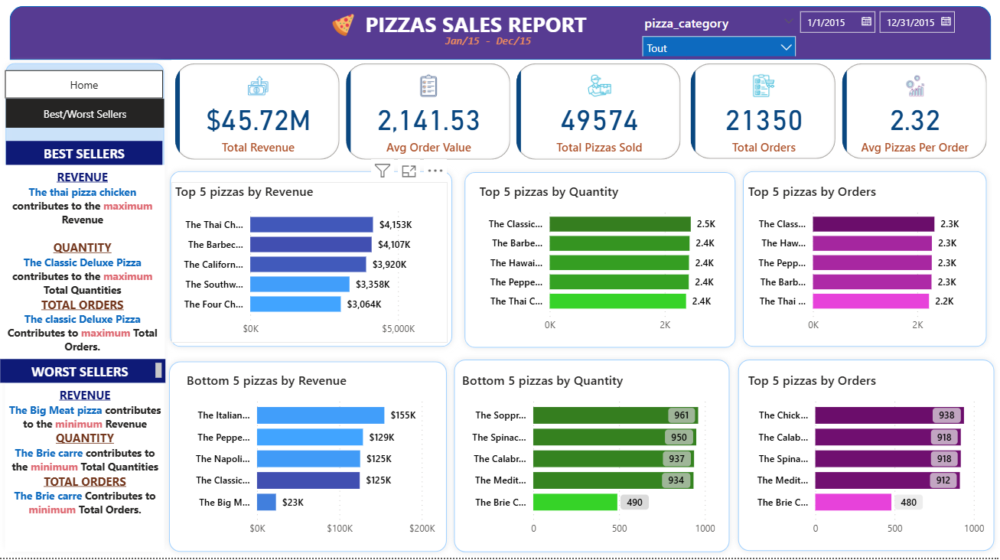

Projets réalisés
Des plateformes data conçues de bout en bout.
Des projets concrets qui associent modélisation, qualité des données et industrialisation.
Plateforme Analytics Engineering - Pilotage Énergétique (End-to-End)
Analytics Engineering · Énergie
Projet de bout en boutConception et développement d’une plateforme analytique complète pour un distributeur d’énergie, simulant un environnement de production moderne selon les principes du Modern Data Stack.
Modélisation métier
Création avec dbt d’un schéma en étoile composé de dimensions et d’une table de faits, transformant les données brutes en indicateurs tels que le coût estimé par consommation.
Qualité et fiabilité
Mise en place de plus de 20 tests automatisés : unicité, intégrité référentielle et règles métier personnalisées pour garantir la confiance dans les données.
CI/CD avec environnement éphémère
Déploiement d’un pipeline GitHub Actions avec SQL Server dans Docker. Les Pull Requests sont bloquées automatiquement en cas de régression.
CBC Bank — Pipeline de données financières
Data Engineering · Finance
ProjetIndustrialisation d’un pipeline de données pour les devises, taux de change et historiques de marché, au service du reporting financier et de l’analyse du risque FX.
Pipeline de données
Traitement des données de devises, taux de change et historiques de marché.
Qualité et reporting
Mise en place de contrôles qualité pour fiabiliser le reporting financier et l’analyse du risque FX.
Performance
Optimisation des traitements Spark et des tables Delta pour améliorer les performances et les coûts.
FECAFOOT-SI — Plateforme de données football
Data Engineering · Sport
ProjetConception d’un pipeline de bout en bout dédié aux équipes, joueurs, matchs et performances, avec des transformations automatisées vers un entrepôt de données cloud.
Pipeline de bout en bout
Collecte et transformation des données d’équipes, joueurs, matchs et performances.
Orchestration cloud
Automatisation des transformations et alimentation d’un entrepôt de données cloud.
Industrialisation
Mise en place de tests, validations et déploiements selon une démarche CI/CD.
Pilotage des ventes d’une pizzeria
Data Analytics · Restauration
Projet BIDéploiement d’un environnement SQL Server sous Docker, préparation des données et création d’un tableau de bord Power BI pour analyser les performances commerciales d’une pizzeria.


Environnement SQL
Déploiement de SQL Server sous Docker et exploitation des données avec SQL.
Préparation des données
Nettoyage, transformation et modélisation avec Power Query pour fiabiliser les analyses.
Tableau de bord et analyse
Création d’un tableau de bord Power BI interactif avec le chiffre d’affaires, le panier moyen, le volume de commandes et les ventes par produit. Analyse des performances par catégorie, taille de pizza et période pour identifier les produits les plus rentables.